Rajasthan is one of the most common place targeted by the tourists to visit if
they are visiting the state of Rajasthan. Bikaner is known as the royal city of
Rajasthan which was founded by Rao Bika in 1488 CE and since then Bikaner has
become the fourth largest city in the state of Rajasthan.Visiting Bikaner can
give you a great feeling because here you will find and get to know about how the
royalties of Rajasthan lived their lives in this princely state. To get the royal
experience of the beautiful city of Bikaner one must visit.
Bikaner in Rajasthan is famous worldwide for its snack – Bhujia. But the culinary
scene of Bikaner food has so much more to offer. Are you wondering what to eat in
Bikaner?
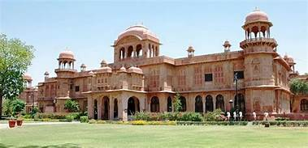
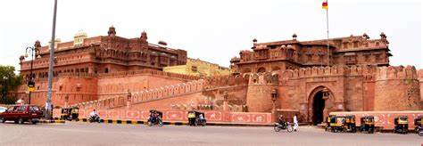
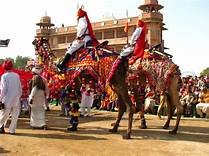
click above to visit ⇑
Time To Fall In Love With Comfort Luxury at Hotel Chirag! Beautiful
calmness surrounding you, let it be Cozy because Sometimes
Rejuvenation makes the difference... Hotel Chirag offers pleasure
staying experience, making the guests feel the experience as of,
“HOME AWAY FROM HOME”.
rating → 4.1
.jpg)
.jpg) 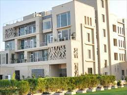
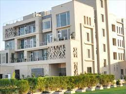
.jpg)
.jpg) 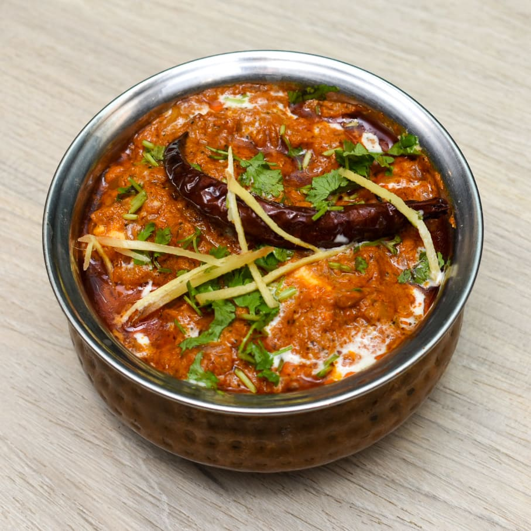
Raj Haveli heitage
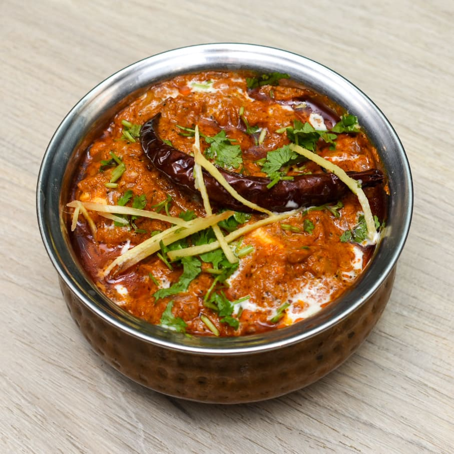
Raj Haveli heitageclick above to visit ⇑
Amidst The Mystic Sand Dunes Of Rajasthan, Raj Haveli Is An Appealing
Treat Of Regal Architecture, Plush Hospitality And Princely Ambiances.
Stand Witness To Erstwhile Glory Of The Royal Era In India By Staying
In Raj Haveli.
The room I stayed was comfy to stay with almirah, led TV, electric
kettle, refrigerator and study table. The restaurant is on the fourth
floor. The complimentary breakfast was delicious with corn flakes, milk,
fruit juice, idli, pancakes, puri, channa masala, coconut chutney,
sambar, poha, bread toast, muffins, coffee and tea. Freshly prepared egg
or mixed vegetables omelette was tasty too. My family was extremely impressed
with the quality and services.
rating → 4.1
.jpg)
.jpg)
.jpg) 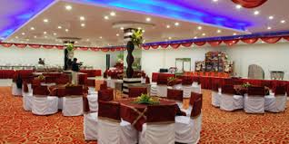
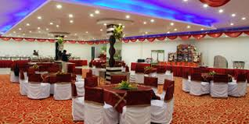
.png)
.png) Riyasat Restro Bar
Riyasat Restro Barclick above to visit ⇑
Aside from Indian cuisine, this place also works with International,
Thai and Indian cuisine. Most eateries have complementary features
for their clients' comfort.Riyasat Restro Bar has such services as
food delivery and high altitude location.
rating → 4.7
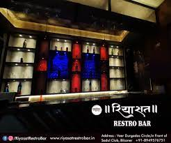.png)
.png) 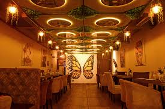
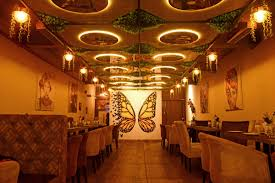
.png)
.jpg) Pearls and Chiffon
Pearls and Chiffonclick above to visit ⇑
Pearls And Chiffon where you can buy and drink (especially alcoholic
drinks) and sometimes have something to eat.
Pearls And Chiffon took a good position in the bar category in Bikaner.
rating → 4.6
.jpg)
.jpg) 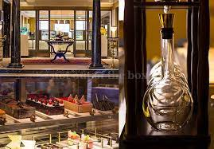
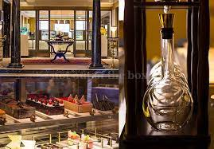
.png) 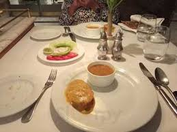
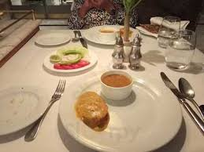
.png) Kings Pavilion Restauran
Kings Pavilion Restauranclick above to visit ⇑
Kings Pavilion Restaurant, Bikaner, is a gorgeous destination for
intimate and close-knit gatherings. Occupying a prime location,
this venue is easily commutable via public and private
transportation. Kings Pavillion Bikaner is reasonably priced and
has well-facilitated arrangements for hosting all your social
events, private gatherings, family reunions, kitty parties,
birthdays, anniversaries, and pre-wedding ceremonies
rating → 3.8
.jpg) 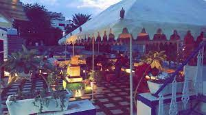
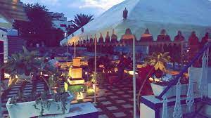
.jpg)
.jpg)
.jpg)
.png)